Ash Manor School
Computing Department
Graphics
Computers are excellent machines for creating and editing graphics. Graphics are picture files.
Aims
By the end of this unit you will learn:
- Key Literacy
- Why Photoshop and Fireworks are used
- How Photoshop/Firework used to edit graphics
- How to select and clear-cut an image using Photoshop/Fireworks
- How Photoshop/firework can be used to remove imperfections from an old photo using various tools (stamp, smudge, touch up)
- How magazines use photographic editing techniques to portray women unrealisitcally
Activity 1
Visual Literacy exercise.
Learning Aims:
- To be able to recognize key terms in graphics
- To learn key terms relating to Photoshop/Fireworks, and graphics editing.
- Key words to help you with this exercise:
- Clear-cut,
- Transparency,
- Selection,
- Stamp,
- Smudge,
- Touch-up.
- Pixel
- Bitmap
- Vector
Find out and explain the meanings of each of the key words, in the context of graphics editing, in a new word document.

Firstly open Adobe Photoshop CS6
Looking at the Photoshop screen in front of you, answer the following questions:
- What options are avaialbe on the side toolbar?
- For each option describe what it does
Repeat this with fireworks, Then write a comparason of the features of photoshop and Fireworks. Use the following headers to help you; , 'What is the same?', 'What is different?', and 'What do you think the different programs are used for?'
Activity 2
File and Bytes
Learning Aims:
- To be able to identify the different tyes of file
- Understand the difference between different types of files
- Understand different file sizes and appropriate uses of different file types.
Use the two images above, download then and use Photoshop's 'save as' function to convert each into the different file types. Create the table below using MS Word/Excel and compare.
| File Type | Description | File Size | Appropriate uses for format |
|---|---|---|---|
| BMP | |||
| JPEG | |||
| PNG | |||
| PSD | |||
| BMP |
Compare the difference between the file types and the filesize in bytes.
Activity 3
Practical Exercise
Learning aims:
- Editing
- Colour
- Monotone
- Selection
- Clear cut
- Wrap and Transparency
TASK 1: Portrait Photo To Pencil Sketch With Photoshop CS6
TASK 2: Colour Splash in Photoshop: Using Quick Selection Tool
TASK 3: How to Cut and Put Images on a Transparent Background
TASK 4: 5 Uses of Clipping Paths in Photoshop
TASK 5: How to Whiten Yellow Teeth in Photoshop
TASK 1: Portrait Photo To Pencil Sketch With Photoshop CS6
Complete the two tasks on your own, if you stuggle use the help sheet
Here’s the photo you will be using (Teen Portrait Photo from Shutterstock):
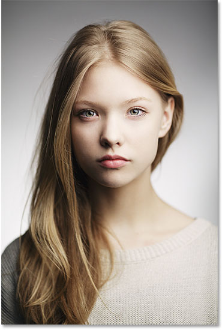Part 1: Black and White Pencil Sketch
Here’s what it will look like as a black and white pencil sketch. You need to achieve similar result

Part 2: Adding Colours from the Original
And here’s what it will look like adding back the colors from the original photo with the same effect:

Challenge yourself to get similar resulst
Use the helpsheet on Moodle for more help
Task 2: Colour Splash in Photoshop: Using Quick Selection Tool
In this activity we will learn to create a Colour Splash Effect in photoshop. We are using Quick Selection Tool to get the resut.
- Open an image you would like to work on in Photoshop. This is the image we will be using for this tutorial: 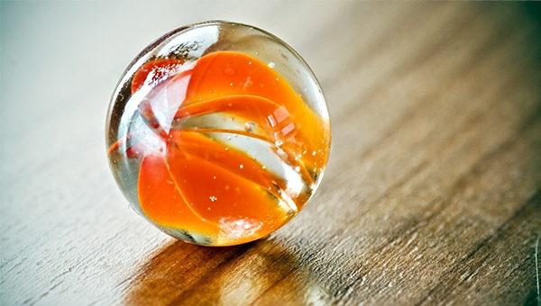
- Go to the Adjustments panel, and click on the Gradient Map icon. A new adjustment layer will be created.
- Now choose the Quick Selection Tool from the Tools Panel.
- Click on Layer Mask and apply the Brush Tool on ball. You should see your first image beginning toappear. This is the desired effect.
Then make the following changes:


Deselect the se;ection. (CTRL + D)
Final Picture:
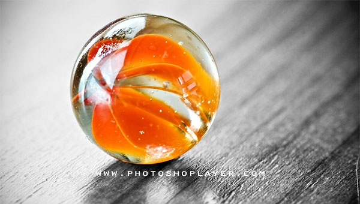Task 3: How to Clean-Cut or Put Images on a Transparent Background
In this activity you will learn how to clear-cut PSD images.
What is clear-cutting an image?
Cutting an image simply means removing the original background so that the focus of the canvas is just one object. The benefit of using a clean-cut image is being able to place the image on any background you choose. This is a great technique to learn when using images on websites or posters. In addition, you can also use clear-cut images on signs, banners, and icons without dealing with distracting backgrounds.
What is PSD?
PSD is simply Photoshop's special image (or photo) format. You have heard of JPEG (which is the most common format) or GIF formats. Most photographs on the internet are in JPEG format. PSD formatted images usually work better in Photoshop, so this is the format we will be using in this activity.
Why use PSD?
When we are editing images we need to store a lot more information than when we present the same image in the final production. We use the PSD format as it contains information about layers, and much more information about the image so that we lose less information when we edit the picture.
To start with, you will need to select an image to work with. Make sure the image will be easy to work with.
- Open up your picture as a canvas in Photoshop. Always make sure the image is saved so you have the original to refer back to.
- On your keyboard, hold down CRTL+A to select the entire image.
- Next, hold down CTRL+C.
- Then go to File -> New. This will make a copy of the image but with a background that is transparent. The image will also stay the same size. Click OK after.
- Hold down CRTL+V to then paste the image.
- Now you will work with the Polygon Lasso Tool, located on the vertical menu bar. Drag the tool around the part of the image you want to cut out and then hit the Delete key. If you end up deleting the wrong part, go to Select> Inverse to change the selection. This will allow you to cut the correct part.
- You will now need to deselect the area. Hold down CRTL+D.
- Choose the eraser tool and set it to a large size with a hardness of about 80-100.
- Zoom in close to the edges of the pictures and erase the unwanted areas that were not deleted in the previous steps. This will insure a better end product.
- Now save the image in PSD format and you're done with a perfectly cut image! Normally we then export the image to a different format depending on what we want to use the oimage for.
Upload your work into Moodle Activity Task 3 Upload slot
TASK 4: 5 Uses of Clipping Paths in Photoshop
Try the following methods:
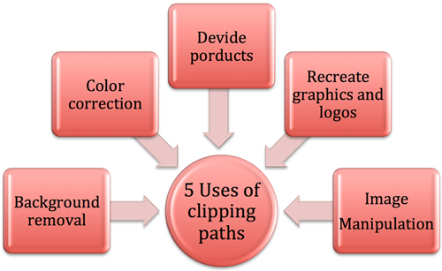- Removing the Background from a Product
- Multiple Clipping Paths for Colour Mask and Colour Corrections 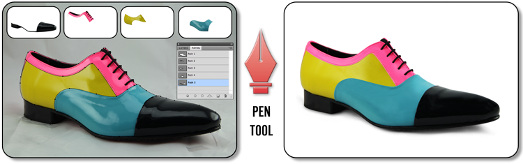
- Using Multiple Clipping Paths to make a Different Colour Product from a Single Shot
- Using Clipping Paths to Recreate Graphics and Logos
- Manipulating Images with Clipping Paths 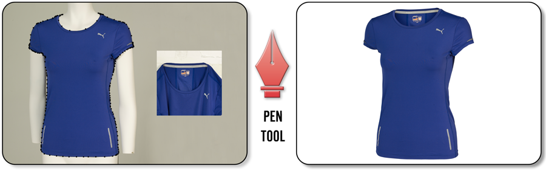 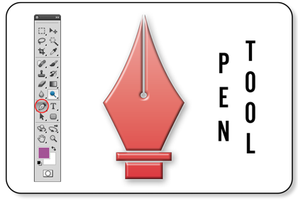


Task 5: How to Whiten Yellow Teeth in Photoshop.
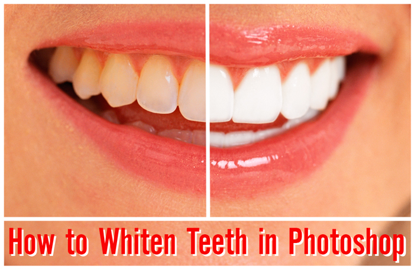Original Image
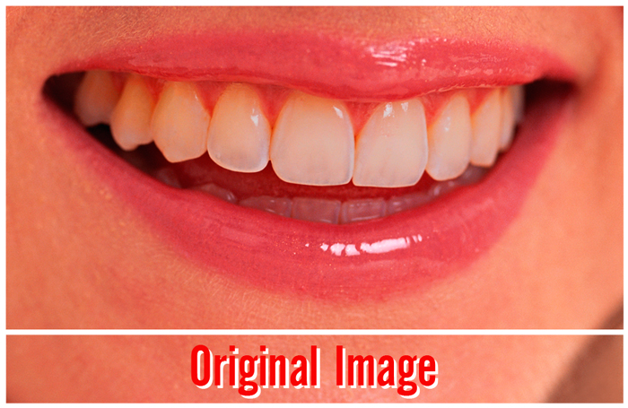- Make sure other corrections are done before applying teeth whitening
- Duplicate the layer and select your edit
- Using The Pen Tool 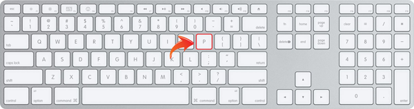
- Using Paths
- Selecting and Feathering
- Whitening the teeth
It’s important to ensure that you have applied all edits, such as contrast, levels, colour and saturation before you start the teeth whitening edits.


The next step is to duplicate the layer. It can be helpful to name it something like ‘teeth whitening’ or similar for reference. Once this is done, you can select the area you want to edit – in this case, the teeth.
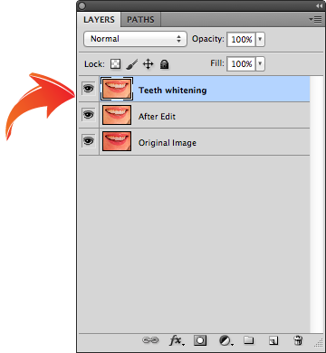
Before you start, make sure you have ‘paths’ selected (found in the top left hand corner).

You can then simply click to set the path points around the teeth, making sure that you click and hold, then move up or down to adjust curves as necessary. Remember, it doesn’t have to be perfect, as long as you have all the teeth outlined.(Complete Task 4: Learn 5 uses of clipping path to get the idea about some ways to apply the paths technique.)
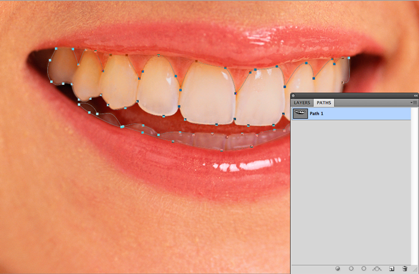
Once you have your outline, right click and ‘make selection’. It can be useful to feather (the 1 pixel setting will be enough) just to smooth out the edges. Then, simply copy and paste the selection, where you can start adjusting the hues and tone as preferred.

Once back in standard mode with your selection active, you can adjust the hues and tone of the teeth by setting the hue/saturation to yellow, value around 80, in the main menu (Image – Adjustments – Hue/Saturation). Use the dodge tool, and set range to midtones and exposure to around 15%. You can then use a large brush that covers your selection to make teeth look whiter.
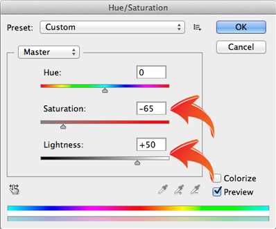 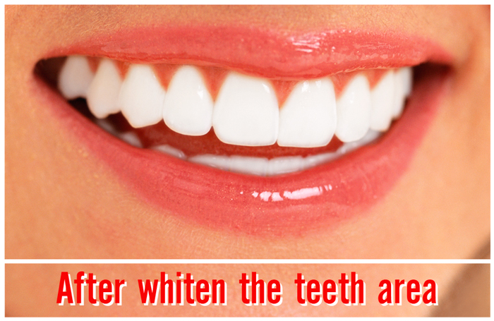Activity 4
Experiment
Learning Aims:
- To be able to use various tools to remove imperfections from an old photo using
- Stamp
- Smudge
- Touch up
In this trutorial, one of tutorial-z.com team's member shows you how you can remove skin imperfections from your image without ruining the quality of the picture. You will learn to remove them using Adobe Photoshop.
Activity 5
Practical Exercise
Learning aims
- To be able to select and clear-cut an image using Photoshop/Fireworks
Activity 6 (Extension)
Investigation
Learning aim:
- To understand that different File types can be used to perform different jobs.
Introduction
There are a number of different ways to store and use graphical files. You are going to write a magazine article of at least 300 words describing under the following headings.
Choose One
- How do computers store information about coulor in a picture?
- How do computers store information about photos?
- How are GIF, BMP and JPEG files the same? How are they different?
- What are teh simmilarities and differences between PNG and GIF files?